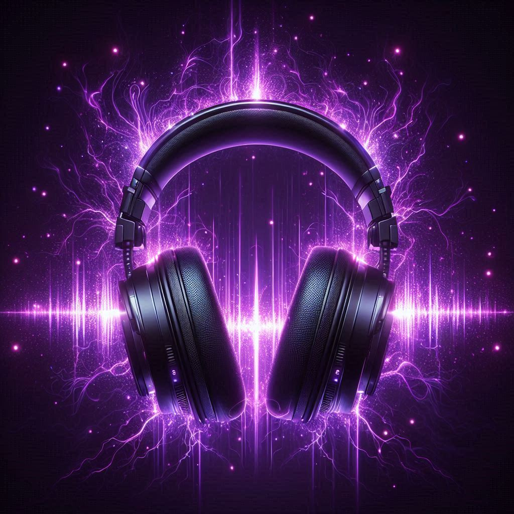
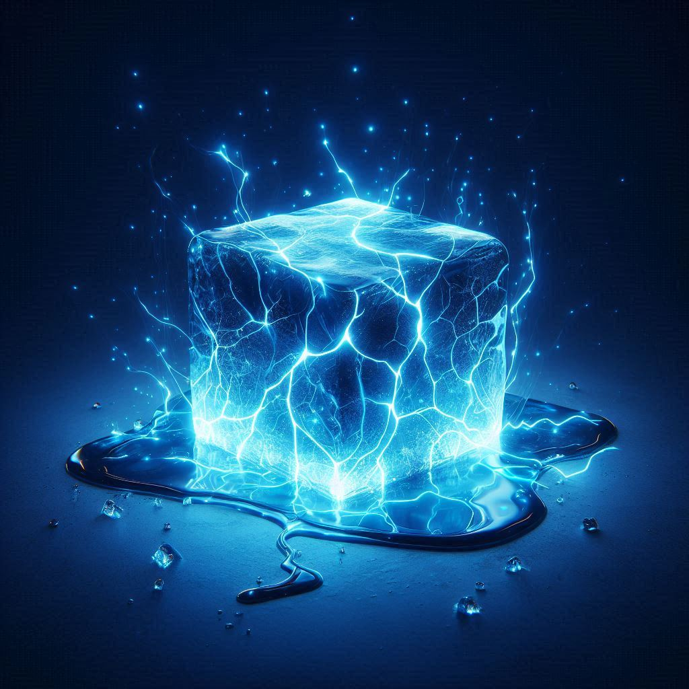

About Me
Learn about me and my experience with Kpop
Bio
- 17 years old
- He/Him
I use Apple Music, so that's why everything here uses it instead of Spotify/YT Music. I don't really care about music videos, so my song recommendations are solely based on how the song sounds. Everything on Kpop Monkey are my personal preferences. Since my taste is cringe, the "Monkey" refers to me. I found most of these songs either through the Apple Music algorithm or Youtube videos. I started listening to Kpop in December 2024, but got completely addicted. You can find all the songs I recommended and a lot more in my playlists.
My Kpop Playlists
Click on the icon to view the playlist
UnderplayedMy favorite songs right now |
|
|  |
VibeMy everyday playlist |
|  |
ChillSongs to relax to |
GoatMy favorite songs of all time, in order |
|
MasterpieceSongs I thing sound like a masterpiece (I didn't make a playlist icon yet) |